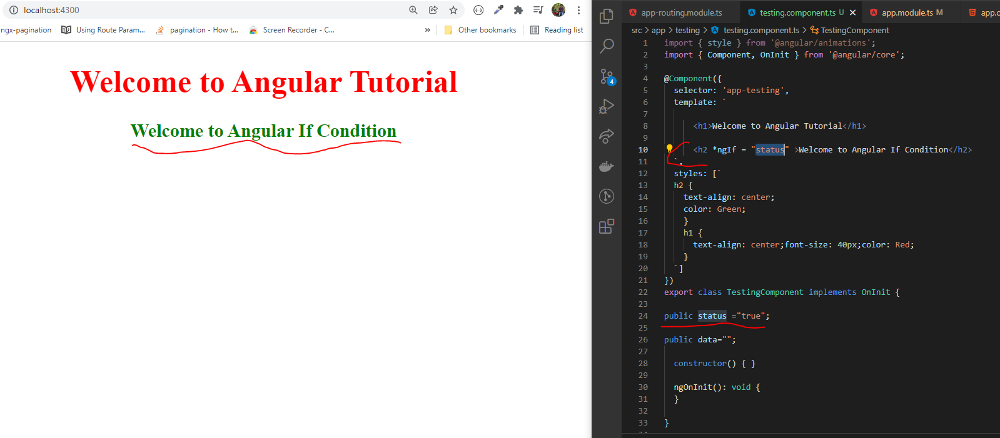

ngIf Directive
Structural Directives:
- Used for adding or removing HTML elements from the template.
- Commonly used structural directives are...
- If-Example:

- In angular to write the else case <ng-template > is required.
- Ex- If-else :

- Ex- If-else : (Using then condition)